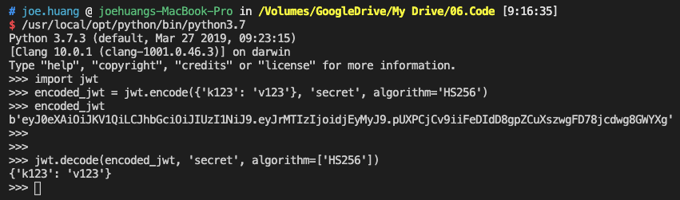
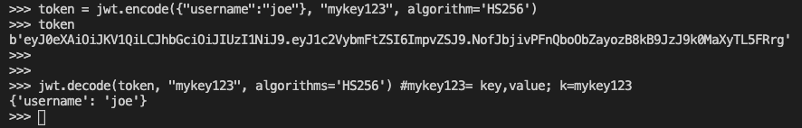
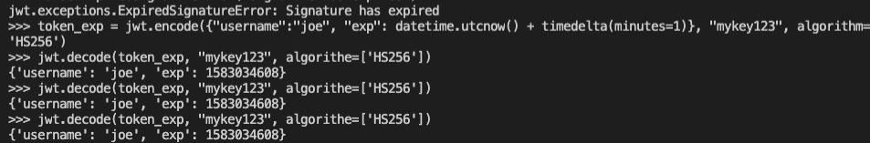
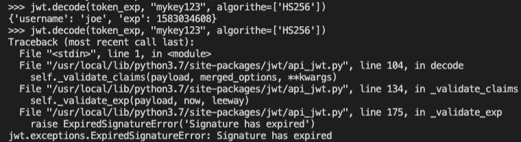

[Python] PyJWT 加解密模組: encode, decode
▌Python JWT Token
Welcome to PyJWT - PyJWT 1.7.1 documentation
PyJWT工具是用來encode、decode的加解密工具，使用jwt module。
即使Token，被擷取了也不用擔心，因為擷取的人沒有SECRET做decode的動作
使用前先導入jwt module，再傳入json格式，一個key、一個value，還有一個加密的算法SECRET，最後會幫你算出一個Token。
範例1：官方入門
- key = k123
- value = v123
- secret = secret
- 演算法 = HS256
→ 將以上參數包成一個json格式放進encode()，encode()會幫你產出一組token
# Sample1
# encoded_jwt
import jwt
encoded_jwt = jwt.encode({'k123': 'v123'}, 'secret', algorithm='HS256')
encoded_jwt
jwt.decode(encoded_jwt, 'secret', algorithm=['HS256'])輸出1
- encode( )執行產出token
- decode( ), 解碼encode的json內容，包括secret，解出key:value值{k123 : v123}

範例2：帳密加密應用
- k = username
- v = joe
- secret = mykey123
- 演算法 = HS256
→ 將以上參數包成一個json格式放進encode()，encode()產出另一組token
# Sample2
# Token with account, passwd
token = jwt.encode({"username":"joe"}, "mykey123", algorithm='HS256')
token
jwt.decode(token, "mykey123", algorithms='HS256') #mykey123= key,value; k=mykey123輸出2
- encode( )執行產出token
- decode( ), 解碼encode的json內容，包括secret，解出key:value值
{'username': 'joe'}

範例3：Token Expiration
上面的範例產出的token都是永久有效的，但這邊存在一個風險。只要對方拿到token後，在慢慢try secret，終究是可以得到明碼的帳密。因此需要設計成一個有效期限，若送出request超時再取token的時候系統就會報錯。
因此token的使用，設定在一個有效的時間區間內。如果超過這個時間，token就等於無效的。
如果要在次使用token時，就得再次輸入帳密
- 使用時間模組
datetimetimedelta - 在json格式中，放進特殊的key:value →
{exp : date}- 超時與時間描述，提供具體的有效期間
- “exp”: datetime.utcnow() + timedelta(minutes=1) →
utcnow當前時間 +timedelta累加時間為1分鐘1# Sample32# Experiation34from datetime import datetime, timedelta56# add specific k & value for exp7token_exp = jwt.encode({"username":"joe", "exp": datetime.utcnow() + timedelta(minutes=1)}, "mykey123", algorithm='HS256')8token_exp910jwt.decode(token_exp, "mykey123", algorithe=['HS256'])輸出3
decode( ), 第一次解碼encode的json內容，在一分鐘之內可以解出key:value值
{'username': 'joe'}
decode( ), 第二次解碼，已超過一分鐘的區間，故報錯回應 →
ExpiredSignatureError
▌結論：
應用上會將jwt包成一個API，讓user login時，而他傳入的body即是account/passwd，正確的話即可以產生一組Token，供系統登入